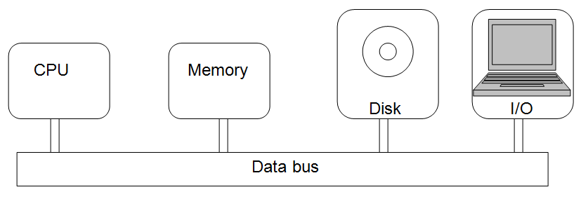

So far, this chapter has looked at a number of common applications of computing and described how such applications can be constructed from algorithms and data structures expressed in the form of computer programs. The next logical question is: “How does computer hardware execute these programs?”. This section introduces some of the main concepts of computing hardware. These concepts will be amplified and extended in Chapters and .
All general-purpose computers, at a minimum, consist of the following hardware components: a central processing unit, main memory, secondary storage, various input/output devices, and a data bus. A diagram showing the major hardware components is presented in .
The central processing unit, or CPU, is the device that is responsible for actually executing the instructions that make up a program. (For this reason, it has sometimes been referred to as the “brain” of the computer.) Before examining the function of the CPU, a number of other components of the computer need to be introduced.
Main memory is where the programs and data that are currently being used are located. Main memory is often referred to as RAM, which stands for Random Access Memory. This acronym is derived from the fact that the CPU may access the contents of main memory in any order – there is no fixed or predefined sequence. In 2003, a new personal computer typically had between 512 megabytes to one gigabyte of main memory, meaning they could store somewhere between one half to one billion characters.
A block diagram of a computer
Secondary storage is used to hold programs and data that are likely to be needed sometime in the near future. Disk drives are the most common secondary storage devices. The capacity of secondary storage devices purchased in 2003 ranged from about 40 to 120 gigabytes, meaning they could store somewhere between 40 to 120 billion characters.
The storage capacity of memory devices, both main memory and secondary storage, tend to increase rapidly over time. Historically, they have doubled approximately once every 18 months. This observation, known as Moore’s law[2], has remained true since the introduction of computers more than half a century ago.
Moore’s law also appears to apply to the speed at which CPU’s process instructions. Personal computers purchased in 2003 operated at speeds of approximately 3 billion cycles per second (3.0 Gigahertz) – meaning they could execute almost 3 billion individual instructions per second. It is this blinding speed that allows computers to accomplish the amazing feats they are capable of.
While the actual sizes of main memory and secondary storage continue to rapidly increase, their relative characteristics have remained fixed for at least a quarter century. Historically, secondary storage devices have tended to hold about 100 times as much information as main memory. In general, main memory is fast, expensive, and of limited size when compared to secondary storage. Conversely, secondary storage is slow, cheap, and large compared to main memory. The primary reason for these differences is that main memory consists of electronic components that have no moving parts. Secondary storage generally involves electromechanical devices, such as a spinning disk, on which information may be read or retrieved using magnetic or optical (laser) technology. Because these devices contain moving parts, they tend to be many times slower than main memory.
Another difference between main memory and secondary storage is that secondary storage is persistent, in the sense that it does not require continuous electrical power to maintain its data. The main memory of most computers is, on the other hand, volatile. It is erased whenever power is shut off.
The data bus is the component of a computer that connects the other components of the computer together so that they may communicate and share data. For example, the instructions that make up a computer program are usually stored in main memory while the program is running. However, the actual computations take place in the CPU. Before an instruction can be executed, it must first be copied from the main memory into the CPU. This copying operation takes place over the data bus.
Now that the major components of a computer have been introduced, the operation of the CPU can be examined. The operation of the CPU is governed by the instruction cycle. The instruction cycle is a procedure that consists of three phases: instruction fetch, instruction decode, and instruction execution. The CPU’s task is to perform the instruction cycle over and over until explicitly instructed to halt. The fetch part of the instruction cycle consists of retrieving an instruction from memory. The decode phase concerns determining what actions the instruction is requesting the CPU to perform. Instruction execution involves performing the operation requested by the instruction.
In order for a computer to do any kind of useful work, it must have ways of communicating with the outside world. Input/output devices allow computers to interact with people and other machines. I/O devices range from the mundane (e.g., keyboard, mouse, and display) to the exotic (e.g., virtual reality glasses and data gloves). Some devices, such as keyboards, are strictly for input only. Other devices, such as display screens, are output only. Still other devices, such as modems, can handle both input and output.
The general trend in I/O devices is towards higher throughput rates. Newer I/O devices can transmit and/or receive greater quantities of data in shorter periods of time. This trend is related to the desire to incorporate very high-resolution graphics, sound, music, and video into modern software products – all of which require large amounts of memory and rapid I/O.
Although modern computer hardware is quite impressive, it is easy to overestimate the capabilities of these machines. Computers can directly perform only a small number of very primitive operations and, in general, their CPUs are sequential devices – able to perform only one instruction at a time. These limitations are not apparent to the average computer user because computer scientists have built up a number of layers of software to insulate the user from the physical machine. Software can be used to make computers appear much more capable and friendly than they actually are because of the tremendous speeds at which they operate. (Remember, a modern PC can execute about 3 billion instructions each second.)
In order to help you gain a familiarity with the capabilities and limitations of computing hardware, a Watson Assembly lab is presented in . This lab simulates the workings of a very simple computer so that you can study the various hardware components, such as the CPU. The machine is fully programmable with its own internal machine language. A Machine language is the set of instructions, expressed as a series of 1’s and 0’s, that are directly executable by the machine. Different types of machines, such as PC’s and Mac’s, have their own unique machine languages.
In the various kinds of programming languages: imperative, functional, logical, and object-oriented, were introduced. These programming languages are known as high-level languages because they hide many of the details inherent in machine languages. Programs written in high-level languages are not directly executable by a machine. How then are programs that are written in these languages ever run? One common approach is to translate programs written high-level languages into the machine language of a particular type of computer. The programs that translate other programs from high-level languages to machine languages are called compilers. After translation, these functionally equivalent machine language programs can be executed to perform the tasks specified by the original high-level programs.
This system of translation balances the needs of hardware designers against those of software designers, and has been in use for over forty years. It allows people to write programs in languages that are closer to the way humans communicate with one another. This approach also allows hardware designers to concentrate on building faster computers without having to become overly concerned with their ease of use. Another important advantage of this system is that it allows computer hardware to advance rapidly without maintaining compatibility with previous systems. When a new chip, such as Intel’s 64-bit Itanium processor, is introduced the only programs that must be written from scratch are the compilers that translate high-level programs into the new chip’s machine language. The vast majority of existing programs, which are written in high-level languages, need only be “recompiled” using the new compliers in order to run on the new chip.
As mentioned above, computers really only understand machine language. These machine languages consist entirely of 1’s and 0’s. This fact brings two questions to mind. First, if computers only process 1’s and 0’s, how can they do word processing involving character data or math involving numbers greater than one? Second, how can an electronic device store and process the symbols “1” and “0” anyway? The first question is addressed in and the second in . Here, I only attempt to give you an intuitive feel for some of the material that will be covered in these chapters.
Human languages tend to be very large, with tens of thousands of individual words, and many, many more potentially valid sentences. Most languages have a written form. It is possible to use a unique symbol for each word, and, in fact, early forms of writing were based on this idea. Extending the idea even further, it would be possible to use a unique symbol for every possible sentence that could be spoken in the language. While this idea would lead to much shorter books, it is probably not a good idea due to the vast number of potential sentences, and therefore symbols, that would be required. Modern languages have tended, in fact, to go the other way, towards fewer unique symbols. This is possible, due to the fact that higher-level symbols, such as words, can be constructed from sequences of lower-level symbols, namely, characters.
The situation with computers, which process only 1’s and 0’s, is analogous to having a two-letter alphabet. It is important to realize that anything that can be written with an alphabet of 26 letters can be written using an alphabet of only two letters. You just need a way of translating back and forth from the 26-letter alphabet to the two-letter alphabet. Of course we use far more than 26 symbols in written English communication. We have both upper and lower case letters, punctuation marks, such as “. , ; : ”, special symbols like “$ # @ &” and so forth. ASCII (pronounced “as ski”), the American Standard Code for Information Interchange, specifies how 128 common symbols are to be represented using 1’s and 0’s. Each ASCII character requires exactly 7 bits, where a bit is just a “1” or a “0”. For example, the symbol “A” has an ASCII representation of “1000001”. It is important to understand that there is nothing magic about using this particular pattern of 1’s and 0’s to represent “A”. The people who designed the ASCII standard could just as easily have chosen some other pattern for this character. What is important is that ASCII is an agreed upon standard that the vast majority of computers use to represent data. Because of this “universal” standard, it is relatively easy to share data between different kinds of machines.
While the digits “0” through “9” are characters that have ASCII representations, computers generally store numbers in a form different from text. The representations used for numbers are chosen in such a way as to make it easier for computers to do math. Here is a binary representation of the number twelve: “1100”. The number twelve is not the same as the character string “12” (read “one two”), which is the symbol for “1” followed by the symbol for “2”, in ASCII “0110001 0110010”.
At this point you should be convinced that anything that can be written down could be encoded using only two symbols. But, how can computers store those two symbols? The answer is that computer hardware contains many electrical circuits that can be either on or off. The two symbols, “1” and “0”, are associated with the two states, on and off. So, for example, a given circuit can be said to hold the symbol “1” when it is on and the symbol “0” when it is off. Collections of these circuits can hold ASCII data and numbers.
In addition to storing symbols, computers must be able to manipulate them. As strange as this may sound, all of the operations that a computer can perform, from math and logic to playing sound and graphics, can be expressed in terms of only three basic operations: “and”, “or”, and “not”. And takes two inputs, if they are both “1”, it produces a “1”; otherwise it produces a “0”. Or also takes two inputs, if either or both inputs are “1”, it produces a “1”; otherwise it produces a “0”. Not takes a single input, if the input is “1” the output is “0”, and vice versa. Electrical circuits for each of these three logic operations can easily be built, and these basic circuits can be combined to produce circuits capable of more complex behavior. explores this subject in more detail and introduces the Watson Digital Logic Lab which can be used to design and test simple digital circuits.
Footnotes
[2] Named after Intel co-founder Gordon Moore.